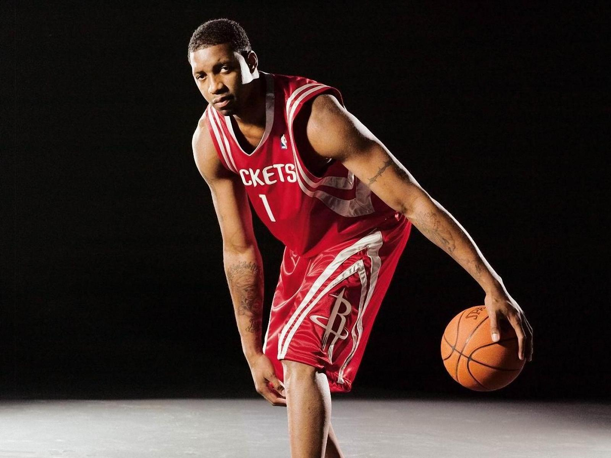

Career
Tracy Lamar McGrady Jr. (born May 24, 1979) is an American former professional basketball player,
best known for his career in the National Basketball Association (NBA). McGrady is a seven-time NBA
All-Star, seven-time All-NBA selection, two-time NBA scoring champion, and winner of the NBA Most
Improved Player Award in 2001. He was inducted into the Naismith Memorial Basketball Hall of Fame as
part of the Class of 2017. McGrady is regarded as one of the greatest scorers and shooting guards in NBA
history.[2][3][4]
McGrady entered the NBA straight out of high school and was selected as the ninth overall pick by the
Toronto Raptors in the 1997 NBA draft. Beginning his career as a low-minute player, he gradually
improved his role with the team, eventually forming a duo with his cousin Vince Carter. In 2000, he left
the Raptors for the Orlando Magic, where he became one of the league's most prolific scorers and a
candidate for the NBA Most Valuable Player Award. In 2004, he was traded to the Houston Rockets, where
he paired with center Yao Ming to help the Rockets become a perennial playoff team. His final seasons in
the NBA were plagued by injuries, and he retired in 2013 following a brief stint with the Qingdao
DoubleStar Eagles of the Chinese Basketball Association (CBA) and the San Antonio Spurs.
Since retiring, McGrady has worked as a basketball analyst for ESPN. From April to July 2014, he
realized his dream of playing professional baseball, pitching for the Sugar Land Skeeters of the
Atlantic League of Professional Baseball.
Personal life
McGrady has three children with his wife, CleRenda Harris.[91] Their first son, Laymen Lamar, was
born on December 27, 2005, during a home game in Houston, which McGrady left at halftime.[92] Tracy's
younger brother, Chancellor "Chance" McGrady, played for the 2008 NCAA Division I men's basketball
tournament runner-up Memphis Tigers.[93]
McGrady is also the second cousin of Vince Carter, who is a basketball player, through Carter's
step-great-grandfather. They were teammates with the Raptors in 1998–2000. Both players were unaware of
the relation until a family reunion in 1997.[94] After McGrady left the Raptors, they had a feud, but it
was resolved in a short period of time.[95]
In 2002, McGrady signed a longterm partnership with Adidas, agreeing to an endorsement deal that lasted
through his playing career and beyond.[96] Adidas produced a signature line of shoes for McGrady that
Complex remembered as "all the buzz in the early-mid 2000s".[97] Upon retiring, McGrady shifted his
focus to his business investments, including Dasdak, a Washington, D.C.-based technology company, and
Blue-04, a bottled water company in Florida.[98] He was also an initial investor in a Minor League
Baseball team which would become the Biloxi Shuckers.[99] Since 2016, he has worked as an NBA analyst
for ESPN.[100]